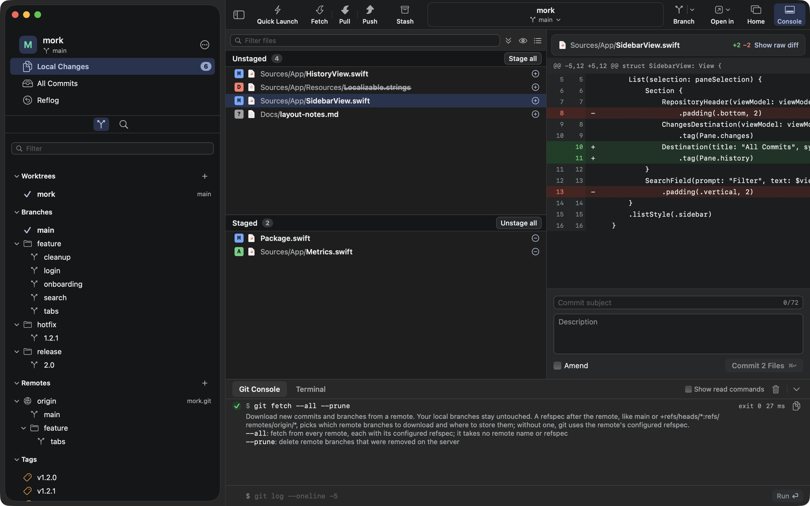
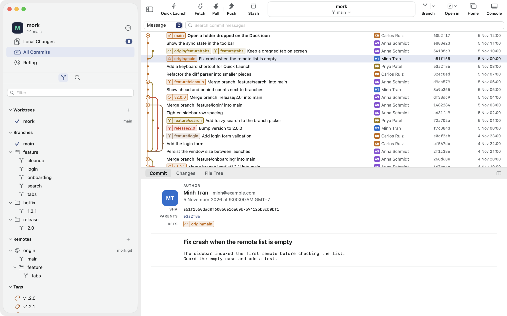
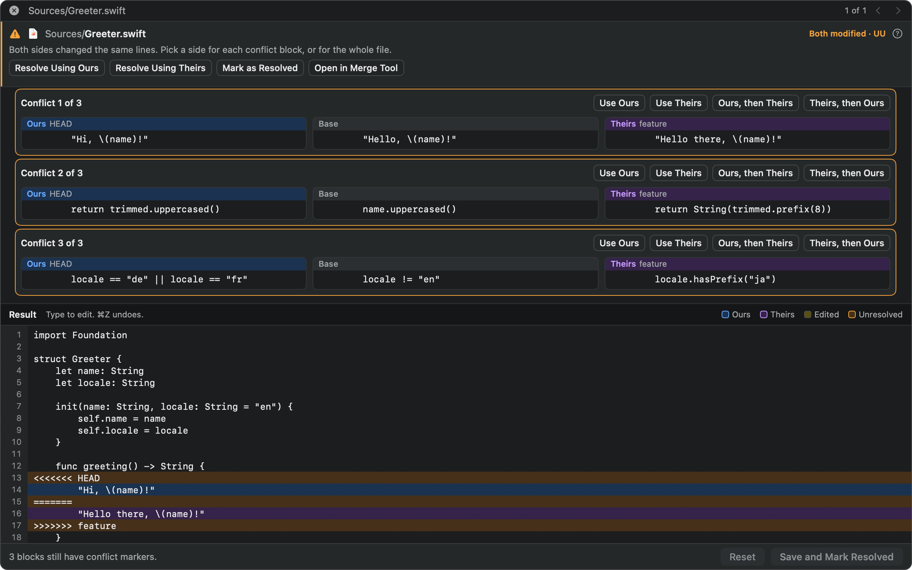

Mork is a native Git client for macOS. Click as usual, and see the real git command, its output and a short lesson.
macOS 14 or later, Apple silicon. Mork is not notarized yet. After moving it to Applications, run this once in Terminal:
xattr -dr com.apple.quarantine /Applications/Mork.app
Most Git apps hide Git. Mork shows it, so you learn while you work.
Every click runs plain git. The Git Console shows the command, the result and what each flag means.
Mork has no Git engine of its own. You can repeat every action in a terminal.
Dialogs show the exact command their button will run.
Mork opens 50,000 commits in under a second.
Browse the commit graph, search commits, and see file history, line history, blame and reflog.

Pick a side for each block, or edit the result yourself. Mork chooses the layout for you.

From your first commit to interactive rebase.
Stage or discard a file, hunk or single line. Commit, amend and sign.
Merge, rebase, cherry-pick, revert and reset. Squash with interactive rebase.
Fetch, pull and push. Create, push and delete tags.
Open several windows and tabs. Save sets of tabs as workspaces.
Bisect, statistics, Git Flow, Git LFS, custom commands and a built-in terminal.
Keep GitHub, GitLab, Bitbucket and Gitea tokens in the Keychain. Manage SSH keys.